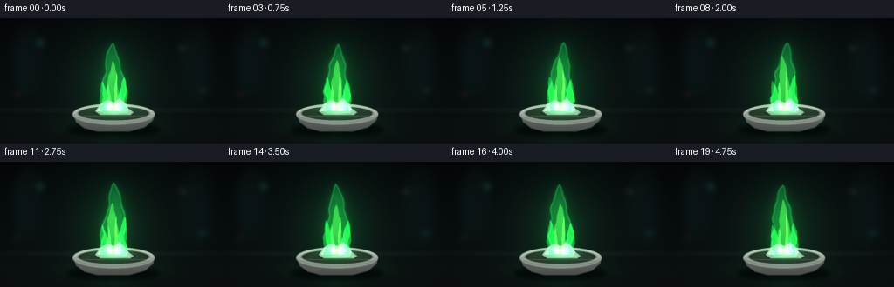
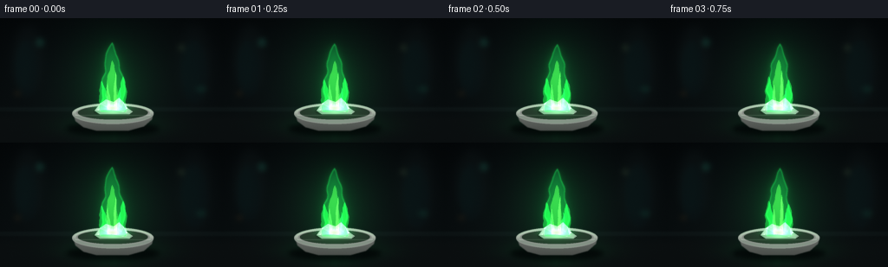

CODING AGENTS AS PIXEL WORLD MODELS
traex/GPT-5.6-Sol · material_0008
点击播放 · 原生 RGB 像素
逐轮保存的候选
回放视频、检查图与代码变化。
每份候选均可单独播放。实际图片检查记录在下方工具轨迹中。
候选 01播放与检查图
点击播放 · 原生 RGB 像素


展开代码变化
--- 上一保存版本
+++ 本次保存版本
@@ -0,0 +1,245 @@
+from pathlib import Path
+import json
+import math
+import numpy as np
+import cv2
+from PIL import Image, ImageDraw
+import artifact_io
+
+# Procedural macro shot: a small crystalline sample of boric acid burning
+# with its characteristic vivid green flame in a porcelain evaporating dish.
+ROOT = Path(__file__).resolve().parent
+spec = json.loads((ROOT / "task_spec.json").read_text())
+W, H = int(spec["width"]), int(spec["height"])
+N = int(spec["frames"])
+S = 3
+w, h = W*S, H*S
+Y, X = np.mgrid[0:h, 0:w].astype(np.float32)
+x = X/S
+y = Y/S
+
+
+def ellipse_mask(cx, cy, rx, ry, blur=0.0):
+ m = (((x-cx)/rx)**2 + ((y-cy)/ry)**2 <= 1).astype(np.float32)
+ if blur:
+ m = cv2.GaussianBlur(m, (0,0), blur*S)
+ return np.clip(m, 0, 1)
+
+
+def poly_mask(points, blur=0.0):
+ m = np.zeros((h,w), np.float32)
+ pts = np.round(np.asarray(points, np.float32)*S).astype(np.int32)
+ cv2.fillPoly(m, [pts], 1.0, lineType=cv2.LINE_AA)
+ if blur:
+ m = cv2.GaussianBlur(m, (0,0), blur*S)
+ return np.clip(m, 0, 1)
+
+
+def blend(im, color, alpha):
+ a = np.clip(alpha, 0, 1)[...,None]
+ return im*(1-a) + np.asarray(color, np.float32)*a
+
+
+def addlight(im, color, alpha):
+ return np.minimum(255, im + np.asarray(color, np.float32)*np.clip(alpha,0,1)[...,None])
+
+
+def contour_mask(cx, base, top, width, phase, wobble=1.0, bias=0.0, blur=0.25):
+ # Organic, coherent flame contour from paired points along a moving centerline.
+ levels = np.linspace(0, 1, 31) # q=0 at base; 1 at tip
+ left, right = [], []
+ for q in levels:
+ cy = base + (top-base)*q
+ center = (cx + bias*q + wobble*(1.45*np.sin(phase + q*5.3)
+ + .72*np.sin(phase*1.71 - q*10.2))*(0.18+0.82*q))
+ taper = max(0.0, 1-q)**0.57
+ ripple_l = 1 + .11*np.sin(phase*1.37 + q*17.0) + .055*np.sin(q*31-phase)
+ ripple_r = 1 + .10*np.sin(phase*1.13 + q*15.0+1.7) + .05*np.sin(q*27+phase)
+ ww = width*taper*(.86 + .22*np.sin(math.pi*q))
+ # keep a very fine pointed end
+ if q > .965: ww *= (1-q)/.035
+ left.append((center-ww*ripple_l, cy))
+ right.append((center+ww*ripple_r, cy))
+ return poly_mask(left + right[::-1], blur)
+
+
+def draw_static_shapes(im):
+ # Out-of-focus laboratory hints: bottles, shelf and restrained bokeh.
+ haze = np.zeros((h,w), np.float32)
+ haze += ellipse_mask(32, 47, 18, 39, 5)*.32
+ haze += ellipse_mask(224, 53, 20, 46, 6)*.27
+ im = blend(im, (18,27,28), haze)
+ # distant bottle shoulders and necks
+ for cx, cy, bw, bh in [(31,58,27,65),(224,62,31,73)]:
+ body = ellipse_mask(cx,cy,bw/2,bh/2,2.6)
+ neck = poly_mask([(cx-5,cy-bh*.50),(cx+5,cy-bh*.50),(cx+7,cy-bh*.25),(cx-7,cy-bh*.25)],2.5)
+ im = blend(im, (9,18,20), np.maximum(body,neck)*.66)
+ edge = ellipse_mask(cx-4,cy-4,bw*.40,bh*.42,4)
+ im = addlight(im,(0,20,16),edge*.12)
+ # blurred colored pin lights
+ for cx,cy,rx,ry,col,a in [(46,28,5,5,(30,120,96),.22),(209,34,4,4,(90,115,70),.17),
+ (232,82,6,4,(23,108,76),.15),(20,87,4,3,(135,89,34),.12)]:
+ im = addlight(im,col,ellipse_mask(cx,cy,rx,ry,3)*a)
+ # rear bench line
+ line = np.exp(-((y-104.5)/1.8)**2) * .18
+ im = addlight(im,(26,37,35),line)
+ return im
+
+
+def make_frame(k):
+ t = k / float(N)
+ phase = 2*math.pi*t
+ # charcoal laboratory background with a soft central lift and lens vignette
+ vertical = np.clip(y/H,0,1)
+ im = np.zeros((h,w,3),np.float32)
+ im[:] = np.array([5.0,9.0,11.0])
+ im += vertical[...,None]*np.array([5.5,7.5,7.0])
+ center_lift = np.exp(-(((x-129)/100)**2 + ((y-69)/79)**2))
+ im += center_lift[...,None]*np.array([4.0,6.0,5.0])
+ vign = np.clip(1-.36*(((x-W/2)/(W*.73))**2 + ((y-H/2)/(H*.72))**2), .55,1)
+ im *= vign[...,None]
+ im = draw_static_shapes(im)
+
+ # Matte lab bench plane.
+ bench = np.clip((y-106)/12,0,1)
+ im = blend(im, (11,15,16), bench*.84)
+ seam = np.exp(-((y-107)/1.2)**2)
+ im = addlight(im,(18,24,23),seam*.19)
+
+ # Animated illumination from the steady flame, softly breathing rather than flashing.
+ breath = .94 + .045*math.sin(phase*2.0+.3) + .018*math.sin(phase*5.0)
+ ambient_glow = np.exp(-(((x-130)/45)**2 + ((y-77)/54)**2))*breath
+ im = addlight(im, (3,37,13), ambient_glow*.74)
+ table_glow = np.exp(-(((x-130)/55)**2 + ((y-124)/11)**2))*breath
+ im = addlight(im, (3,42,17), table_glow*.48)
+ reflection = np.exp(-(((x-130)/20)**2 + ((y-133)/10)**2)) * np.clip((y-116)/9,0,1)
+ reflection *= (.76 + .24*np.sin((x-125)*.23+phase)**2)
+ im = addlight(im,(5,60,24),reflection*.24)
+
+ # Contact shadow and porcelain evaporating dish.
+ im = blend(im,(1,3,4),ellipse_mask(130,128,54,9,3)*.78)
+ body = poly_mask([(84,110),(87,119),(96,126),(111,130),(148,130),(166,125),(175,117),(177,109)],.5)
+ # subtle vertical ceramic shading
+ shade = np.clip((y-107)/24,0,1)
+ body_col = np.stack([np.full_like(x,108),np.full_like(x,113),np.full_like(x,108)],axis=-1)
+ body_col *= (1-.33*shade[...,None])
+ a=body[...,None]
+ im=im*(1-a)+body_col*a
+ outer = ellipse_mask(130,110.5,47,12,.35)
+ im = blend(im,(139,145,138),outer)
+ # inner cavity, green-lit by the sample
+ inner = ellipse_mask(130,109.2,40.5,8.1,.3)
+ inner_col=np.zeros_like(im); inner_col[:]=[37,48,40]
+ inner_col += ambient_glow[...,None]*np.array([1,22,7])
+ im=im*(1-inner[...,None])+inner_col*inner[...,None]
+ # rim highlights and back lip
+ rim_outer = ellipse_mask(130,109.8,47,11.8,.3)
+ rim_inner = ellipse_mask(130,109.5,42.7,8.7,.3)
+ rim = np.clip(rim_outer-rim_inner,0,1)
+ im = blend(im,(167,173,164),rim*.86)
+ backlight = rim*np.exp(-((y-103)/5.2)**2)
+ im = addlight(im,(37,95,47),backlight*.35)
+
+ # White, faceted boric-acid crystal piece / small mound.
+ crystal_shadow=ellipse_mask(130,108.0,22,4.3,1.1)
+ im=blend(im,(7,15,10),crystal_shadow*.55)
+ facets=[
+ ([(109,107),(115,99),(123,97),(128,106)],(175,190,176)),
+ ([(115,99),(122,94),(131,97),(128,106)],(223,231,219)),
+ ([(128,106),(131,97),(140,95),(147,104),(142,109)],(190,209,192)),
+ ([(131,97),(137,92),(143,98),(140,104)],(234,239,229)),
+ ([(142,109),(147,104),(153,108),(149,111)],(145,169,150)),
+ ([(109,107),(128,106),(142,109),(149,111),(115,111)],(125,151,132)),
+ ]
+ for pts,col in facets:
+ m=poly_mask(pts,.18)
+ im=blend(im,col,m)
+ # green reflections across facets
+ im=addlight(im,(25,90,38),poly_mask([(109,107),(128,103),(151,107),(149,111),(114,111)],.6)*.36)
+ for cx,cy,r in [(121,98,1.0),(138,96,1.15),(113,106,.65),(146,104,.75)]:
+ im=addlight(im,(165,255,180),ellipse_mask(cx,cy,r,r*.7,.25)*.6)
+
+ # Flame movement remains continuous and steady; only the tip/lobes shift.
+ top = 26.5 + 2.5*math.sin(phase*1.0+.6) + 1.25*math.sin(phase*3.0)
+ base = 108.0
+ outer_flame = contour_mask(130,base,top,15.5,phase*1.23+.4,1.0,
+ 2.2*math.sin(phase*.72),.22)
+ # large luminous aura (two radii gives a cinematic, natural falloff)
+ aura1=cv2.GaussianBlur(outer_flame,(0,0),4.0*S)
+ aura2=cv2.GaussianBlur(outer_flame,(0,0),10.5*S)
+ im=addlight(im,(5,105,33),aura2*.38*breath)
+ im=addlight(im,(6,112,30),aura1*.34*breath)
+
+ # Transparent emerald outer flame with a cooler green edge at its base.
+ vertical_flame=np.clip((base-y)/(base-top),0,1)
+ col=np.empty_like(im)
+ col[...,0]=18 + 22*(1-vertical_flame)
+ col[...,1]=203 + 40*(1-vertical_flame)
+ col[...,2]=72 + 24*vertical_flame
+ alpha=outer_flame*(.22+.20*(1-vertical_flame))
+ im=im*(1-alpha[...,None])+col*alpha[...,None]
+
+ # Edge halos trace the characteristic emerald outline.
+ eroded=cv2.erode(outer_flame,np.ones((5,5),np.uint8),iterations=1)
+ edge=np.clip(outer_flame-eroded,0,1)
+ im=addlight(im,(18,152,48),cv2.GaussianBlur(edge,(0,0),.75*S)*.67)
+
+ # Central lime tongue, curved independently inside the transparent envelope.
+ inner_top=46 + 3.4*math.sin(phase*1.55+1.1)
+ inner=contour_mask(130,107,inner_top,8.2,phase*1.46+2.0,.68,-1.2,.20)
+ # It narrows at the base around a small darker hollow, as a real alcohol-like flame does.
+ inner_alpha=inner*(.24+.34*np.clip((108-y)/43,0,1))
+ im=addlight(im,(70,190,45),inner_alpha*.62)
+ im=blend(im,(112,255,100),inner_alpha*.33)
+
+ # Side licks create a lively but stable silhouette.
+ left_top=70+3.5*math.sin(phase*1.84+2.3)
+ left=contour_mask(121.2,107,left_top,6.2,phase*1.68+1.3,.55,-4.0,.22)
+ right_top=67+4.0*math.sin(phase*1.41+.1)
+ right=contour_mask(139.0,107,right_top,6.5,phase*1.39+4.2,.55,3.2,.22)
+ im=addlight(im,(20,185,48),left*.54)
+ im=addlight(im,(25,205,55),right*.51)
+
+ # Fine, rising luminous striations within the green flame.
+ for j,(cx0,ht,ww,offset,color,strength) in enumerate([
+ (125.5,75,2.2,.2,(82,220,62),.45),
+ (133.0,61,2.0,2.1,(118,235,72),.40),
+ (137.0,82,1.4,4.1,(25,210,69),.42),
+ ]):
+ tip=ht+2.0*math.sin(phase*(1.35+j*.18)+offset)
+ tongue=contour_mask(cx0,106,tip,ww,phase*(1.5+j*.11)+offset,.42,
+ (j-1)*1.3,.16)
+ im=addlight(im,color,tongue*strength)
+
+ # Brilliant cyan-green combustion line and pale hot kernel around the sample.
+ baseband=np.exp(-(((x-130)/14.5)**2+((y-104.5)/3.6)**2))
+ baseband*=np.clip((109-y)/3.5,0,1)
+ im=addlight(im,(34,205,94),baseband*.77)
+ core=np.exp(-(((x-130.5)/7.2)**2+((y-103.2)/4.6)**2))
+ im=addlight(im,(150,255,134),core*.65)
+ hot=np.exp(-(((x-129.5)/3.5)**2+((y-104.0)/2.0)**2))
+ im=blend(im,(216,255,191),hot*.62)
+
+ # Repaint the front rim lightly so the flame is seated inside, not pasted over the bowl.
+ front=np.clip(rim*np.clip((y-109.2)/4.2,0,1),0,1)
+ im=blend(im,(125,133,126),front*.88)
+ im=addlight(im,(14,62,22),front*ambient_glow*.36)
+ lipline=np.exp(-((y-112.2)/.72)**2)*ellipse_mask(130,111,44,10,.1)
+ lipline*=np.clip((y-109)/4,0,1)
+ im=addlight(im,(72,81,72),lipline*.35)
+
+ # Restrained sensor grain and final optical softness at native resolution.
+ rng=np.random.default_rng(9821+k)
+ grain=rng.normal(0,.72,(h,w,1)).astype(np.float32)
+ im += grain
+ im=np.clip(im,0,255).astype(np.uint8)
+ out=cv2.resize(im,(W,H),interpolation=cv2.INTER_AREA)
+ # delicate local contrast without harsh edges
+ soft=cv2.GaussianBlur(out,(0,0),.45)
+ out=np.clip(out.astype(np.float32)*1.08-soft.astype(np.float32)*.08,0,255).astype(np.uint8)
+ return out
+
+frames=np.stack([make_frame(i) for i in range(N)],axis=0).astype(np.uint8)
+assert frames.shape==(N,H,W,3)
+artifact_io.save(frames, ROOT)
+print(f"saved {N} RGB frames at {W}x{H}")
可观测工具轨迹
实际执行的命令与返回图片。
命令 1exit 0
/bin/bash -lc "cat prompt.txt && printf '\\n---RULES---\\n' && cat GENERATION_RULES.md && printf '\\n---SPEC---\\n' && cat task_spec.json"
命令 2exit 1
/bin/bash -lc "find . -maxdepth 2 -type f -printf '%p %s bytes\\n' | sort && printf '\\nTOOLS\\n' && command -v ffmpeg && command -v python3 && python3 - <<'PY' mods=['numpy','PIL','cv2','cairo','moviepy'] for m in mods: try: x=__import__(m); print(m,'OK',getattr(x,'__version__','')) except Exception as e: print(m,'NO',e) PY"
命令 3exit 0
/bin/bash -lc "cat artifact_io.py && printf '\\n--- available binaries/modules ---\\n'; command -v ffmpeg || true; command -v python3 || true; python3 - <<'PY' mods=['numpy','PIL','cv2','cairo','moviepy','imageio'] for m in mods: try: x=__import__(m); print(m,'OK',getattr(x,'__version__','')) except Exception as e: print(m,'NO',repr(e)) PY"
命令 4exit 0
/bin/bash -lc "cat > generate.py <<'PY'
from pathlib import Path
import json
import math
import numpy as np
import cv2
from PIL import Image, ImageDraw
import artifact_io
# Procedural macro shot: a small crystalline sample of boric acid burning
# with its characteristic vivid green flame in a porcelain evaporating dish.
ROOT = Path(__file__).resolve().parent
spec = json.loads((ROOT / \"task_spec.json\").read_text())
W, H = int(spec[\"width\"]), int(spec[\"height\"])
N = int(spec[\"frames\"])
S = 3
w, h = W*S, H*S
Y, X = np.mgrid[0:h, 0:w].astype(np.float32)
x = X/S
y = Y/S
def ellipse_mask(cx, cy, rx, ry, blur=0.0):
m = (((x-cx)/rx)**2 + ((y-cy)/ry)**2 <= 1).astype(np.float32)
if blur:
m = cv2.GaussianBlur(m, (0,0), blur*S)
return np.clip(m, 0, 1)
def poly_mask(points, blur=0.0):
m = np.zeros((h,w), np.float32)
pts = np.round(np.asarray(points, np.float32)*S).astype(np.int32)
cv2.fillPoly(m, [pts], 1.0, lineType=cv2.LINE_AA)
if blur:
m = cv2.GaussianBlur(m, (0,0), blur*S)
return np.clip(m, 0, 1)
def blend(im, color, alpha):
a = np.clip(alpha, 0, 1)[...,None]
return im*(1-a) + np.asarray(color, np.float32)*a
def addlight(im, color, alpha):
return np.minimum(255, im + np.asarray(color, np.float32)*np.clip(alpha,0,1)[...,None])
def contour_mask(cx, base, top, width, phase, wobble=1.0, bias=0.0, blur=0.25):
# Organic, coherent flame contour from paired points along a moving centerline.
levels = np.linspace(0, 1, 31) # q=0 at base; 1 at tip
left, right = [], []
for q in levels:
cy = base + (top-base)*q
center = (cx + bias*q + wobble*(1.45*np.sin(phase + q*5.3)
+ .72*np.sin(phase*1.71 - q*10.2))*(0.18+0.82*q))
taper = max(0.0, 1-q)**0.57
ripple_l = 1 + .11*np.sin(phase*1.37 + q*17.0) + .055*np.sin(q*31-phase)
ripple_r = 1 + .10*np.sin(phase*1.13 + q*15.0+1.7) + .05*np.sin(q*27+phase)
ww = width*taper*(.86 + .22*np.sin(math.pi*q))
# keep a very fine pointed end
if q > .965: ww *= (1-q)/.035
left.append((center-ww*ripple_l, cy))
right.append((center+ww*ripple_r, cy))
return poly_mask(left + right[::-1], blur)
def draw_static_shapes(im):
# Out-of-focus laboratory hints: bottles, shelf and restrained bokeh.
haze = np.zeros((h,w), np.float32)
haze += ellipse_mask(32, 47, 18, 39, 5)*.32
haze += ellipse_mask(224, 53, 20, 46, 6)*.27
im = blend(im, (18,27,28), haze)
# distant bottle shoulders and necks
for cx, cy, bw, bh in [(31,58,27,65),(224,62,31,73)]:
body = ellipse_mask(cx,cy,bw/2,bh/2,2.6)
neck = poly_mask([(cx-5,cy-bh*.50),(cx+5,cy-bh*.50),(cx+7,cy-bh*.25),(cx-7,cy-bh*.25)],2.5)
im = blend(im, (9,18,20), np.maximum(body,neck)*.66)
edge = ellipse_mask(cx-4,cy-4,bw*.40,bh*.42,4)
im = addlight(im,(0,20,16),edge*.12)
# blurred colored pin lights
for cx,cy,rx,ry,col,a in [(46,28,5,5,(30,120,96),.22),(209,34,4,4,(90,115,70),.17),
(232,82,6,4,(23,108,76),.15),(20,87,4,3,(135,89,34),.12)]:
im = addlight(im,col,ellipse_mask(cx,cy,rx,ry,3)*a)
# rear bench line
line = np.exp(-((y-104.5)/1.8)**2) * .18
im = addlight(im,(26,37,35),line)
return im
def make_frame(k):
t = k / float(N)
phase = 2*math.pi*t
# charcoal laboratory background with a soft central lift and lens vignette
vertical = np.clip(y/H,0,1)
im = np.zeros((h,w,3),np.float32)
im[:] = np.array([5.0,9.0,11.0])
im += vertical[...,None]*np.array([5.5,7.5,7.0])
center_lift = np.exp(-(((x-129)/100)**2 + ((y-69)/79)**2))
im += center_lift[...,None]*np.array([4.0,6.0,5.0])
vign = np.clip(1-.36*(((x-W/2)/(W*.73))**2 + ((y-H/2)/(H*.72))**2), .55,1)
im *= vign[...,None]
im = draw_static_shapes(im)
# Matte lab bench plane.
bench = np.clip((y-106)/12,0,1)
im = blend(im, (11,15,16), bench*.84)
seam = np.exp(-((y-107)/1.2)**2)
im = addlight(im,(18,24,23),seam*.19)
# Animated illumination from the steady flame, softly breathing rather than flashing.
breath = .94 + .045*math.sin(phase*2.0+.3) + .018*math.sin(phase*5.0)
ambient_glow = np.exp(-(((x-130)/45)**2 + ((y-77)/54)**2))*breath
im = addlight(im, (3,37,13), ambient_glow*.74)
table_glow = np.exp(-(((x-130)/55)**2 + ((y-124)/11)**2))*breath
im = addlight(im, (3,42,17), table_glow*.48)
reflection = np.exp(-(((x-130)/20)**2 + ((y-133)/10)**2)) * np.clip((y-116)/9,0,1)
reflection *= (.76 + .24*np.sin((x-125)*.23+phase)**2)
im = addlight(im,(5,60,24),reflection*.24)
# Contact shadow and porcelain evaporating dish.
im = blend(im,(1,3,4),ellipse_mask(130,128,54,9,3)*.78)
body = poly_mask([(84,110),(87,119),(96,126),(111,130),(148,130),(166,125),(175,117),(177,109)],.5)
# subtle vertical ceramic shading
shade = np.clip((y-107)/24,0,1)
body_col = np.stack([np.full_like(x,108),np.full_like(x,113),np.full_like(x,108)],axis=-1)
body_col *= (1-.33*shade[...,None])
a=body[...,None]
im=im*(1-a)+body_col*a
outer = ellipse_mask(130,110.5,47,12,.35)
im = blend(im,(139,145,138),outer)
# inner cavity, green-lit by the sample
inner = ellipse_mask(130,109.2,40.5,8.1,.3)
inner_col=np.zeros_like(im); inner_col[:]=[37,48,40]
inner_col += ambient_glow[...,None]*np.array([1,22,7])
im=im*(1-inner[...,None])+inner_col*inner[...,None]
# rim highlights and back lip
rim_outer = ellipse_mask(130,109.8,47,11.8,.3)
rim_inner = ellipse_mask(130,109.5,42.7,8.7,.3)
rim = np.clip(rim_outer-rim_inner,0,1)
im = blend(im,(167,173,164),rim*.86)
backlight = rim*np.exp(-((y-103)/5.2)**2)
im = addlight(im,(37,95,47),backlight*.35)
# White, faceted boric-acid crystal piece / small mound.
crystal_shadow=ellipse_mask(130,108.0,22,4.3,1.1)
im=blend(im,(7,15,10),crystal_shadow*.55)
facets=[
([(109,107),(115,99),(123,97),(128,106)],(175,190,176)),
([(115,99),(122,94),(131,97),(128,106)],(223,231,219)),
([(128,106),(131,97),(140,95),(147,104),(142,109)],(190,209,192)),
([(131,97),(137,92),(143,98),(140,104)],(234,239,229)),
([(142,109),(147,104),(153,108),(149,111)],(145,169,150)),
([(109,107),(128,106),(142,109),(149,111),(115,111)],(125,151,132)),
]
for pts,col in facets:
m=poly_mask(pts,.18)
im=blend(im,col,m)
# green reflections across facets
im=addlight(im,(25,90,38),poly_mask([(109,107),(128,103),(151,107),(149,111),(114,111)],.6)*.36)
for cx,cy,r in [(121,98,1.0),(138,96,1.15),(113,106,.65),(146,104,.75)]:
im=addlight(im,(165,255,180),ellipse_mask(cx,cy,r,r*.7,.25)*.6)
# Flame movement remains continuous and steady; only the tip/lobes shift.
top = 26.5 + 2.5*math.sin(phase*1.0+.6) + 1.25*math.sin(phase*3.0)
base = 108.0
outer_flame = contour_mask(130,base,top,15.5,phase*1.23+.4,1.0,
2.2*math.sin(phase*.72),.22)
# large luminous aura (two radii gives a cinematic, natural falloff)
aura1=cv2.GaussianBlur(outer_flame,(0,0),4.0*S)
aura2=cv2.GaussianBlur(outer_flame,(0,0),10.5*S)
im=addlight(im,(5,105,33),aura2*.38*breath)
im=addlight(im,(6,112,30),aura1*.34*breath)
# Transparent emerald outer flame with a cooler green edge at its base.
vertical_flame=np.clip((base-y)/(base-top),0,1)
col=np.empty_like(im)
col[...,0]=18 + 22*(1-vertical_flame)
col[...,1]=203 + 40*(1-vertical_flame)
col[...,2]=72 + 24*vertical_flame
alpha=outer_flame*(.22+.20*(1-vertical_flame))
im=im*(1-alpha[...,None])+col*alpha[...,None]
# Edge halos trace the characteristic emerald outline.
eroded=cv2.erode(outer_flame,np.ones((5,5),np.uint8),iterations=1)
edge=np.clip(outer_flame-eroded,0,1)
im=addlight(im,(18,152,48),cv2.GaussianBlur(edge,(0,0),.75*S)*.67)
# Central lime tongue, curved independently inside the transparent envelope.
inner_top=46 + 3.4*math.sin(phase*1.55+1.1)
inner=contour_mask(130,107,inner_top,8.2,phase*1.46+2.0,.68,-1.2,.20)
# It narrows at the base around a small darker hollow, as a real alcohol-like flame does.
inner_alpha=inner*(.24+.34*np.clip((108-y)/43,0,1))
im=addlight(im,(70,190,45),inner_alpha*.62)
im=blend(im,(112,255,100),inner_alpha*.33)
# Side licks create a lively but stable silhouette.
left_top=70+3.5*math.sin(phase*1.84+2.3)
left=contour_mask(121.2,107,left_top,6.2,phase*1.68+1.3,.55,-4.0,.22)
right_top=67+4.0*math.sin(phase*1.41+.1)
right=contour_mask(139.0,107,right_top,6.5,phase*1.39+4.2,.55,3.2,.22)
im=addlight(im,(20,185,48),left*.54)
im=addlight(im,(25,205,55),right*.51)
# Fine, rising luminous striations within the green flame.
for j,(cx0,ht,ww,offset,color,strength) in enumerate([
(125.5,75,2.2,.2,(82,220,62),.45),
(133.0,61,2.0,2.1,(118,235,72),.40),
(137.0,82,1.4,4.1,(25,210,69),.42),
]):
tip=ht+2.0*math.sin(phase*(1.35+j*.18)+offset)
tongue=contour_mask(cx0,106,tip,ww,phase*(1.5+j*.11)+offset,.42,
(j-1)*1.3,.16)
im=addlight(im,color,tongue*strength)
# Brilliant cyan-green combustion line and pale hot kernel around the sample.
baseband=np.exp(-(((x-130)/14.5)**2+((y-104.5)/3.6)**2))
baseband*=np.clip((109-y)/3.5,0,1)
im=addlight(im,(34,205,94),baseband*.77)
core=np.exp(-(((x-130.5)/7.2)**2+((y-103.2)/4.6)**2))
im=addlight(im,(150,255,134),core*.65)
hot=np.exp(-(((x-129.5)/3.5)**2+((y-104.0)/2.0)**2))
im=blend(im,(216,255,191),hot*.62)
# Repaint the front rim lightly so the flame is seated inside, not pasted over the bowl.
front=np.clip(rim*np.clip((y-109.2)/4.2,0,1),0,1)
im=blend(im,(125,133,126),front*.88)
im=addlight(im,(14,62,22),front*ambient_glow*.36)
lipline=np.exp(-((y-112.2)/.72)**2)*ellipse_mask(130,111,44,10,.1)
lipline*=np.clip((y-109)/4,0,1)
im=addlight(im,(72,81,72),lipline*.35)
# Restrained sensor grain and final optical softness at native resolution.
rng=np.random.default_rng(9821+k)
grain=rng.normal(0,.72,(h,w,1)).astype(np.float32)
im += grain
im=np.clip(im,0,255).astype(np.uint8)
out=cv2.resize(im,(W,H),interpolation=cv2.INTER_AREA)
# delicate local contrast without harsh edges
soft=cv2.GaussianBlur(out,(0,0),.45)
out=np.clip(out.astype(np.float32)*1.08-soft.astype(np.float32)*.08,0,255).astype(np.uint8)
return out
frames=np.stack([make_frame(i) for i in range(N)],axis=0).astype(np.uint8)
assert frames.shape==(N,H,W,3)
artifact_io.save(frames, ROOT)
print(f\"saved {N} RGB frames at {W}x{H}\")
PY
python3 generate.py
ls -lh pixels.npz inspection.png transition_check.png index.html frames/00.png frames/19.png"命令 5exit 0
/bin/bash -lc "python3 - <<'PY'
import numpy as np
from PIL import Image
p=np.load('pixels.npz')['pixels']
print('packed tensor:',p.shape,p.dtype)
fs=np.stack([np.array(Image.open(f'frames/{i:02}.png')) for i in range(20)])
print('frames:',fs.shape,fs.dtype,'range',fs.min(),fs.max())
print('mean RGB:',fs.mean((0,1,2)).round(2))
roi=fs[:,20:110,105:155]
print('flame ROI RGB mean:',roi.mean((0,1,2)).round(2), 'bright green pixels/frame:', ((roi[:,:,:,1]>100)&(roi[:,:,:,1]>roi[:,:,:,0]*1.7)).sum((1,2)).tolist())
d=np.abs(fs[1:].astype(int)-fs[:-1].astype(int))
print('mean temporal abs diffs:',np.round(d.mean((1,2,3)),2).tolist())
print('all RGB modes:',sorted(set(Image.open(f'frames/{i:02}.png').mode for i in range(20))))
PY"保存候选 1 份；完成命令 5 次；可验证图片返回 0 张。原始 API 响应与完整日志保留在本地。